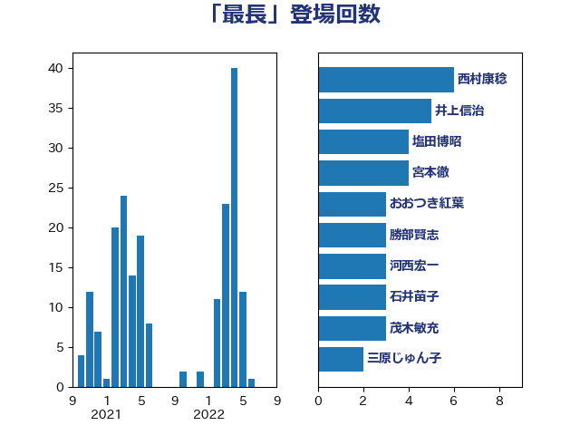

単語「最長」

| 西村康稔 | 自由民主党 | 6 回 |
| 井上信治 | 自由民主党 | 5 回 |
| 塩田博昭 | 公明党 | 4 回 |
| 宮本徹 | 日本共産党 | 4 回 |
| おおつき紅葉 | 立憲民主党 | 3 回 |
| 勝部賢志 | 立憲民主党 | 3 回 |
| 河西宏一 | 公明党 | 3 回 |
| 石井苗子 | 日本維新の会 | 3 回 |
| 茂木敏充 | 自由民主党 | 3 回 |
| 三原じゅん子 | 自由民主党 | 2 回 |
| 下野六太 | 公明党 | 2 回 |
| 世耕弘成 | 自由民主党 | 2 回 |
| 串田誠一 | 日本維新の会 | 2 回 |
| 井上貴博 | 自由民主党 | 2 回 |
| 小西洋之 | 立憲民主党 | 2 回 |
| 岬麻紀 | 日本維新の会 | 2 回 |
| 後藤茂之 | 自由民主党 | 2 回 |
| 松沢成文 | 日本維新の会 | 2 回 |
| 田村智子 | 日本共産党 | 2 回 |
| 矢倉克夫 | 公明党 | 2 回 |
| 福山哲郎 | 立憲民主党 | 2 回 |
| 秋葉賢也 | 自由民主党 | 2 回 |
| 萩生田光一 | 自由民主党 | 2 回 |
| 近藤和也 | 立憲民主党 | 2 回 |
| 進藤金日子 | 自由民主党 | 2 回 |
| 野田佳彦 | 立憲民主党 | 2 回 |
| 野田聖子 | 自由民主党 | 2 回 |
| 金子恵美 | 立憲民主党 | 2 回 |
| 高良鉄美 | 無所属 | 2 回 |
| 三木圭恵 | 日本維新の会 | 1 回 |
| 上川陽子 | 自由民主党 | 1 回 |
| 井坂信彦 | 立憲民主党 | 1 回 |
| 井林辰憲 | 自由民主党 | 1 回 |
| 伊藤孝恵 | 国民民主党 | 1 回 |
| 伊藤岳 | 日本共産党 | 1 回 |
| 前原誠司 | 国民民主党 | 1 回 |
| 古賀友一郎 | 自由民主党 | 1 回 |
| 吉川赳 | 無所属 | 1 回 |
| 國場幸之助 | 自由民主党 | 1 回 |
| 大口善徳 | 公明党 | 1 回 |
| 大島敦 | 立憲民主党 | 1 回 |
| 大西健介 | 立憲民主党 | 1 回 |
| 奥下剛光 | 日本維新の会 | 1 回 |
| 安江伸夫 | 公明党 | 1 回 |
| 室井邦彦 | 日本維新の会 | 1 回 |
| 小林鷹之 | 自由民主党 | 1 回 |
| 尾崎正直 | 自由民主党 | 1 回 |
| 山崎誠 | 立憲民主党 | 1 回 |
| 山本博司 | 公明党 | 1 回 |
| 山田賢司 | 自由民主党 | 1 回 |
| 川田龍平 | 立憲民主党 | 1 回 |
| 徳永エリ | 立憲民主党 | 1 回 |
| 斉藤鉄夫 | 公明党 | 1 回 |
| 新藤義孝 | 自由民主党 | 1 回 |
| 日下正喜 | 公明党 | 1 回 |
| 早稲田ゆき | 立憲民主党 | 1 回 |
| 末松信介 | 自由民主党 | 1 回 |
| 本庄知史 | 立憲民主党 | 1 回 |
| 杉尾秀哉 | 立憲民主党 | 1 回 |
| 東徹 | 日本維新の会 | 1 回 |
| 林芳正 | 自由民主党 | 1 回 |
| 枝野幸男 | 立憲民主党 | 1 回 |
| 浅野哲 | 国民民主党 | 1 回 |
| 渡辺周 | 立憲民主党 | 1 回 |
| 牧山ひろえ | 立憲民主党 | 1 回 |
| 田中健 | 国民民主党 | 1 回 |
| 田中英之 | 自由民主党 | 1 回 |
| 田所嘉徳 | 自由民主党 | 1 回 |
| 田村憲久 | 自由民主党 | 1 回 |
| 秋野公造 | 公明党 | 1 回 |
| 竹内譲 | 公明党 | 1 回 |
| 美延映夫 | 日本維新の会 | 1 回 |
| 羽田次郎 | 立憲民主党 | 1 回 |
| 菅義偉 | 自由民主党 | 1 回 |
| 西銘恒三郎 | 自由民主党 | 1 回 |
| 里見隆治 | 公明党 | 1 回 |
| 野上浩太郎 | 自由民主党 | 1 回 |
| 野間健 | 立憲民主党 | 1 回 |
| 金村龍那 | 日本維新の会 | 1 回 |
| 高市早苗 | 自由民主党 | 1 回 |
| 高階恵美子 | 自由民主党 | 1 回 |
| 齋藤健 | 自由民主党 | 1 回 |